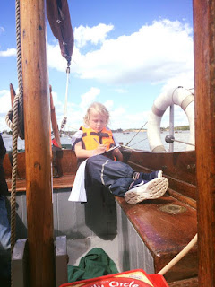

 |
| Grand-daughter Hetty writes up her log on PD |
{kind=link}
I have a new dream job. Yachting
Monthly, a magazine I’ve known all my life, has asked me to contribute
monthly book reviews. They’re very short, more like notices really but the reading is so good
for the brain – or did I mean soul? This summer I’ve managed no more than a few
snatched hours on the water -- Peter Duck
has only left the Deben once (that’s not counting the time darling-son Bertie ran
her on the bar on the EBB … my blood chills as I think of it…) and, while she pretends she’s been reasonably
contented on mother-ship duties, it’s not the same as setting out to sea. I’m
promising her (as ever) that next season will be different (last year I wrote a pledge to that effect which I left in her cabin through the winter) but, until
then, I’ve a stash of YM books and am going to make the most of
vicarious adventure. I'll read on board. Arthur Ransome used Racundra as his
floating office to extend his sailing season in1924 so I can at least quote precedent.
I’ll recommend Paul Heiney’s Pilot
Guide
to Cape Horn and Antarctic Waters. Awe-inspiring detailed
knowledge contributed by sailors in whose wake PD and I will never follow,
together with fragments of history, geology, politics, insight into the natural
world and practical seamanship. Plus photos. It was one of my first review
choices. Briefly I felt embarrassed by the fact that I have absolutely no intention
of venturing into the Southern Ocean then I remembered all the gardening books
I used to sell from my bookshop to people were unlikely ever to plant those
glorious woodland vistas in their small town garden but enjoyed imagining they
might. I could get hooked on pilot guides. They’re so specific and factual –such
a spur to the imagination. I watch Blue
Planet2 on TV with the ooh-ah factor every Sunday and forget it at once but
give me a book that deals with the detail of mooring to rock or highlights a particular
cove where you might be glad to find shelter if you need to do some underwater
work on your vessel, then I’m there (in my dreams) knocking picks into the
crevices and running lines out from all four quarters to secure against the
williwaws. {kind=link}
The previous regular review contributor had died: YM was short staffed and
books had been stacking up. I received a generous boxful with
instructions to aim for variety – mix pilot guides with novels, cruising tales
with how-to manuals, history with humour. As far as genres are concerned there’s
a rich choice – my first page will review a book about madness at sea + a pocket guide
to cloud formations + the Cape Horn pilot guide. The second, post traumatic war veterans on a
British Isle circumnavigation + a step by step aid to diagnosing diesel engine problems
+ a scholarly History of Yachting from the Restoration to the present day. Next, an exposé of America’s Cup shenanigans + a
collection of Pooteresque comic sketches + a meandering exploration of
redundant industrial archaeology on the lower reaches of the Thames.
{kind=link}
More packages followed as publicists were told I was now the
send-to person. Within a week I had thirty-odd books on my shelf – yet
only two were by women (and neither of those quickened my reviewer’s pulses). This % is
not unfamiliar. Earlier this year I began to assist with the YM “Book at Bunktime”
feature – another infinitely desirable task: select a yachting classic, put it
in context, offer a smidgen of biographical research, choose an extract –share and
enjoy. I checked the list of forty three titles already featured; three by
women. I made a private vow to improve on this (it was not unlike leaving that
note in PD’s cabin). Recently YM readers will have enjoyed (I hope) Lallie in E
Arnot Robertson’s Ordinary Families (1933)
winning a dinghy race in gusty conditions while keeping her feet out of the
water because it was the first day of her period and currently (December issue)
the indomitable Cecily Gould (aged 13) and her sister Bess (15) dragging their
father’s 15 ton yacht Gossip through
the Gota Canal with utter cheerfulness. “The
girls and I will manage.”
{kind=link}
Male achievements will continue to be honoured in the YM
book pages. I hope we’ll celebrate Christmas in the company of Robin Knox
Johnston as he approaches Cape Horn on his winning non-stop circumnavigation in
1968-9 but then perhaps it won’t be too long afterwards that we revisit the
only female-authored title of the forty eight in the iconic Mariners Library series -- Elizabeth
Linklater’s A Child Under Sail (1938). Born in 1868, daughter of a master
mariner, she made her first passage on her father’s ship when she was four years old, crossing
the Atlantic with a cargo of chalk from Grays in Essex to Boston, Massachusetts. There was little chance of her father involving
her in the running of his merchant ship in the way that Cecily Gould’s father
made yachtswomen from his daughters. “Women on board a merchant vessel were
there on sufferance”. Yet her voice is well worth hearing as she too rounds the
Horn.
{kind=link}
After two days running we actually were pooped. An enormous sea came over the stern and filled the ship fore and aft. In spite of all the precautions that had been taken, the water ran down the companion stairs, the passages were full, so were my room and the starboard after cabin. I put on my rubber boots and helped the steward to bale the water out of the saloon and spare room. The water had got in from the main deck through the sail-locker. Everything that had been left on the floors was floating about and our trunks were standing in water. We had to unlash them, put pieces of wood under them and relash them in readiness for another inundation.
How can one describe the feelings of women battened down in
a ship's cabin in circumstances such as these? I don’t mean the water coming
into the cabins – that was a diversion that relieved the tension after the
first shock was over – but the awful suspense until we knew that the three men on
the poop – the captain, the officer on watch and the man at the wheel had not
be swept away by the terrific force of the incoming wave.”
How indeed … if such books by female authors do not find their
place in every reviewer’s box load? I sent an email to some of the publicists
mentioning my interest in any good sailing titles written by women. Another package
soon arrived: Sail Away by Celia
Imrie (forthcoming 2018) – two women evading their domestic and career problems
as passengers on a transatlantic cruise liner. It wasn’t quite what I’d had in
mind.
{kind=link}